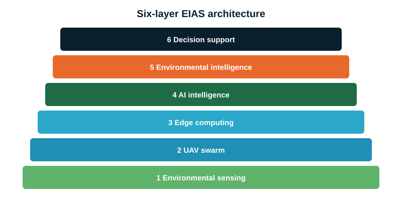
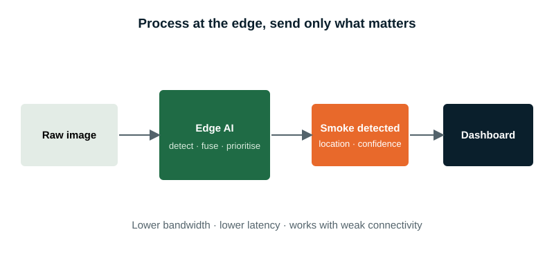
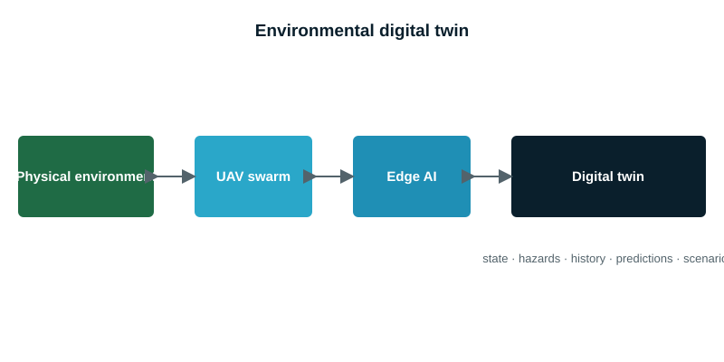

System architecture
Six layers take raw observations to decisions, with computing placed as close to the sensor as possible.

Edge strategy
A UAV or nearby edge node processes data first. Cloud infrastructure is still used for historical storage, model training, large-scale analysis and long-term modelling.
Techniques include model compression, quantisation, lightweight neural networks and efficient inference pipelines.


Environmental digital twin
A future extension keeps a computational copy of the monitored environment, updated continuously from UAV observations. It holds environmental state, hazard locations, history, predicted change, risk zones and intervention scenarios, enabling prediction and scenario analysis, not only monitoring.